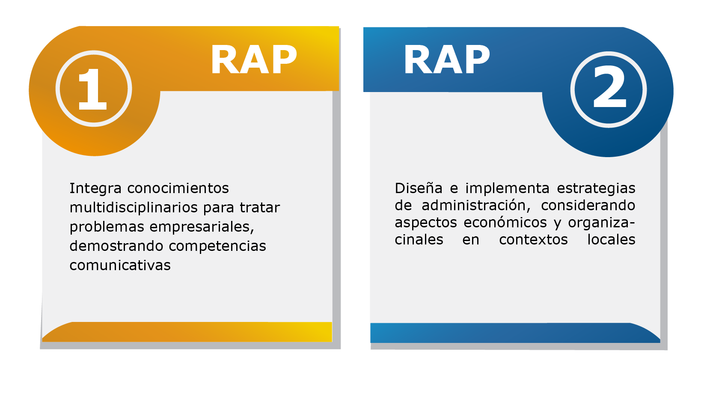

A través de esta unidad lograrás los siguientes resultados:
Para visualizarlo dale clic hacia abajo al icono.
- Integra conocimientos multidisciplinarios para tratar problemas empresariales, demostrando competencias comunicativas.
- Diseña e implementa estrategias de administración, considerando aspectos económicos y organizacionales en contextos locales. Para lograr estos resultados, alcanza las siguientes habilidades:
- Comprender el concepto de organización social, sus razones de existencia (sociales, materiales, sinergia) y el efecto sinérgico, aplicando autores del campo de la administración.
- Comprender el modelo de empresa como sistema abierto (inputs-procesamiento-outputs-feedback), identificando sus parámetros y tipos de retroalimentación, y relacionándolos con la interacción empresa-entorno.